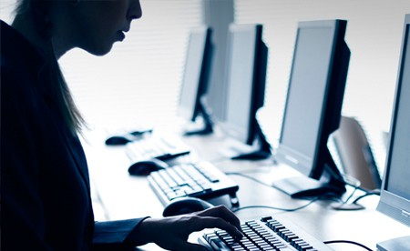
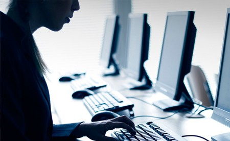
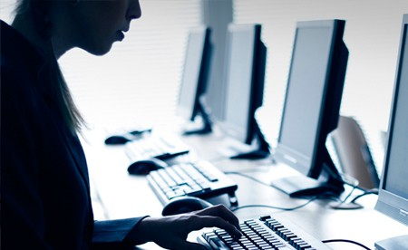
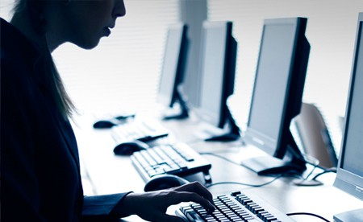

Sistema de control de Sesiones de Laboratorio
Dentro la Universidad Mayor de San Simon ,el departamento de Informatica -Sistemas, cuenta con laboratorios de proposito general,
los que pueden ser utilizados para practicas de los estudiantes sobre todo en niveles basicos, es asi que se est´a trabajando con algunos grupos pilotos para llevar adelante trabajo pr´actico en laboratorio.